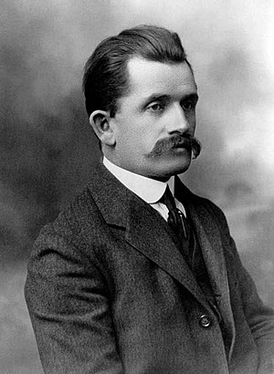
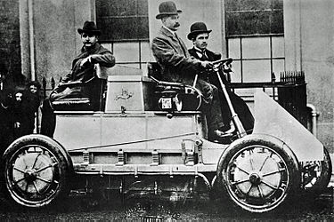

Criador da Porsche


Ferdinand Porsche (Professor Doktor Ingenieur Honoris Causa (Dr. h.c. Ing.);(Maffersdorf, 3 de setembro de 1875 — Stuttgart, 30 de janeiro de 1951)foi um engenheiro automotivo austríaco famoso durante sua carreira pelos projetos inovadores,e famoso nos dias de hoje pelo desenvolvimento do Volkswagen Fusca (Volkswagen "Carocha" em Portugal).Juntamente com seu filho e equipe, foi responsável pela construção do primeiro Porsche 356 - e pela fundação da própria Porsche, por consequência.